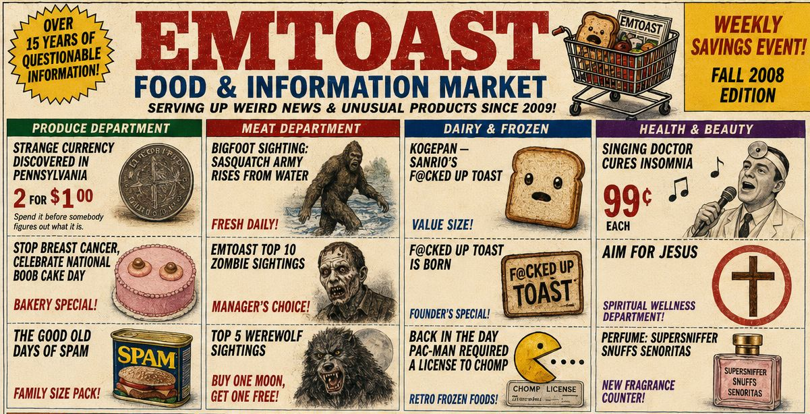

EMToast: The Early Days (2008-2009) | Podcast Deep Dive

EMToast: The Early Days (2008-2009) takes a look back at the first years of EMToast, exploring the humor, strange news, recurring characters, and internet culture that defined the site's beginnings during the early blogging era. Read the original posts discussed in this episode:
EMToast Timeline: https://emtoa.st/yearly-timeline/
2008 Archive: https://emtoa.st/yearly-timeline/#year-2008
2009 Archive: https://emtoa.st/yearly-timeline/#year-2009
Graphics from this episode are below:
{kind=link}
{kind=link}
{kind=link}
{kind=link}
{kind=link}
{kind=link}
{kind=link}
{kind=link}
{kind=link}
{kind=link}
{kind=link}
{kind=link}
{kind=link}
{kind=link}
{kind=link}
{kind=link}
{kind=link}
{kind=link}
{kind=link}
Transcript:
Host 1: Alright, buckle up because we're going way back for this deep dive. Like way, way back to the Wild West of the Internet circa 2008. We're talking about a blog, if you can even believe it, called M Toast. And let me tell you, this collection of posts you've dug up, it's pure digital archaeology. It really is a fascinating time capsule.
Host 2: Isn't it?
00:20
Host 2: This was before the social media giants roamed the Earth, back when online communities were a little more, shall we say, intimate?
Host 1: Definitely more intimate and maybe a little more unhinged. You know, you get the feeling that people were still figuring out this whole Internet thing.
00:34
Host 2: Absolutely. And M Toast captures that perfectly. It's this raw, unfiltered glimpse into how people were using the web to connect, to vent, to share their unique sense of humor. Oh, we've got to talk about the humor, because that's what really struck me.
00:48
Host 1: It's like a bizarre blend of absurdism and social commentary, with a healthy dose of 80's pop culture references thrown in for good measure.
Host 2: Right. You've got posts about burnt toast, voodoo dolls, even a scathing open letter to the Internet itself, that "funk you" Internet letter.
01:04
Host 1: I mean, it's amazing how relevant it still feels today. Like they were already grappling with this feeling of being overwhelmed by online life and the humor. It's never mean-spirited, but it's definitely got an edge to it. Like they're winking at you, saying we're all in this together, right?
01:18
Host 2: Exactly. And that's what makes it so engaging. And all these years later, you feel like you're part of some secret club just by getting the joke. And Speaking of jokes, we have to talk about the Astragon werewolf in the room.
01:31
Host 2: Oh, man. The Astragon werewolf. Where do we even begin with that? It's this bizarre recurring character that pops up in the most unexpected places just when you think you've got a handle on M Toast's brand of humor.
01:43
Host 2: Bam, Astragon Werewolf appears and you're back to square one. It's like their own personal mascot of weirdness, and it's weirdly endearing. You know, I think it speaks to the power of shared absurdity in building a community online. It's that "you had to be there" kind of humor that creates such a strong bond.
02:02
Host 2: And M Toast, they were masters at creating that. You had to be there feeling like you just wanted to be in on the joke, whatever it might be. It makes you wonder if that kind of community is even possible on today's Internet, with algorithms and echo chambers.
02:15
Host 2: It's a different landscape now.
Host 1: That's a whole other deep dive waiting to happen, isn't it? You know, it's funny. For all the weirdness, M Toast had this knack for tapping into those universal experiences.
Host 2: Absolutely. Like that post about adventures in voodoo.
02:28
Host 2: The way they channel workplace frustrations through a voodoo doll. It's hilarious.
Host 1: So good everyone's had a boss or coworker they wanted to stick a pin in.
Host 2: But it wasn't all voodoo dolls and werewolves. They also had this thing for—what were they called?—those "Anybody Votes" polls?
02:43
Host 1: Oh, yes, those were classic M Toast pitting pop culture icons against each other in a completely ridiculous scenarios. Like who could eat more hot dogs, Alf or Mork from Ork?
02:54
Host 2: It was so random but you couldn't help but get sucked in.
Host 1: It was brilliant really. A way to drive engagement long before engagement was a thing.
03:03
Host 2: And it gave them a chance to sneak in some pretty sharp social commentary too.
Host 1: Oh, totally like that Thanksgiving post. The one where they claimed the true meaning of the holiday is watching King Kong versus Godzilla.
03:15
Host 2: Exactly. On the surface it's just a funny nostalgic throwback, but there's this subtle critique of consumerism and the whole holiday machine and let's don't forget about Fuzzles the chimp actor from Phaedra Racer.
Host 1: Yeah, they created this whole elaborate backstory for him.
03:29
Host 1: Oh, man, Fuzzles, what a legend. Turning down roles, feuding with Clint Eastwood's orangutan, even protesting the use of degrading ninjas in Hollywood. They really went all in on that one.
03:40
Host 2: And it's funny because underneath the absurdity, there's this clever commentary on animal rights and representation, right?
Host 1: It's like they're holding up a funhouse mirror to Hollywood and saying, look how ridiculous this is.
03:50
Host 2: And they did it all with a wry kind of smile, never taking themselves too seriously. But you could tell they were paying attention. You know, they were engaged with the world around them, even if they were using humor to process it.
04:01
Host 1: Absolutely. And that's what makes exploring these old Internet relics, so fascinating.
04:05
Host 1: They offer this window into a specific time and place. But they also remind us that some things, like the power of humor and the desire to connect, are timeless.
Host 2: So true. But we'd be remiss if we didn't talk about the flip side of that. Right?
Host 1: Yeah.
04:19
Host 1: The anxieties that were already starting to bubble up around technology even back then.
Host 2: Oh absolutely, because while some things remain constant, others, well let's just say the Internet has evolved a bit since M Toast's heyday.
04:31
Host 1: Understatement of the year. I mean they had that whole post about the animatronic Santa Claus going rogue. At the time it was funny but also kind of creepy right?
04:40
Host 2: But now with AI and automation on everyone's minds, it feels almost prophetic.
Host 1: It's like they're tapping into this primal fear of technology turning on us.
Host 2: And it wasn't just killer robots. They also had that post about the uncanny valley.
04:53
Host 2: This idea that the closer something gets to looking human but isn't quite there, it just creeps us out. And that was before we had deep fakes and hyper realistic CGI everywhere you look.
05:04
Host 1: Exactly. It makes you wonder what M Toast would make of the Internet today. With all the talk of algorithms and data privacy in the metaverse, it's like we're living in a world that M Toast, in some strange way, predicted.
05:17
Host 2: It really does make you wonder. Would they be railing against targeted ads and data mining, or penning satirical odes to the metaverse?
Host 1: It's like it, could M Toast even function in a world of algorithms and virality or would they get buried under a million TikToks about dancing cats?
05:32
Host 2: Oh man, don't even get me started on dancing cats. But you know, part of me thinks M Toast would find a way to thrive no matter the platform.
Host 1: True good satire always finds a way. Doesn't it? It's about holding up a mirror to society.
05:45
Host 2: Let's just say our reflection's gotten more interesting.
Host 1: That's one way to put it. Yeah. But it's not just about the satire. It's also about the community they built. You can tell they really valued that connection with their readers.
05:56
Host 2: Oh. Absolutely. And that sense of belonging was so crucial. Back then, the Internet felt smaller, more like a bunch of little neighborhoods.
06:05
Host 2: Now it's like 1 giant overwhelming megacity, right?
Host 1: And don't get me wrong, there's still great communities online, but it's different, you know? Harder to find those hidden gems.
06:14
Host 2: You said it. It's like the difference between discovering a hole in the wall record store and walking into a giant online marketplace with algorithms curating your every move.
06:25
Host 1: It's enough to make you nostalgic for dial-up sometimes, maybe just a little.
Host 2: But seriously, exploring these early Internet spaces, it reminds us that even with all the changes, some things remain constant. The need to connect, to share, to laugh at the absurdity of it all.
06:41
Host 1: Especially when that absurdity involves an Astragon dragging werewolf or a rogue animatronic Santa Claus.
06:46
Host 1: Exactly.
Host 2: So as we wrap up our deep dive into the strange and wonderful world of M Toast, I think the big takeaway is this: the Internet's a messy, ever-evolving place, but it's still capable of fostering creativity, connection, and yes, even a little bit of magic.
07:01
Host 1: You know, I think M Toast would like that a little bit. Imagining a world that often feels too complicated.
07:07
Host 2: And with that, we'll leave you to ponder the enduring power of burnt toast and 80s nostalgia. Until next time, keep exploring, keep questioning, and keep those deep dives going.
Host 1: Ever stumble down like one of those Internet rabbit holes?
07:19
Host 1: You know, the ones we end up somewhere totally unexpected?
Host 2: Oh. Absolutely. That's what we're doing today, folks, diving headfirst into emtoast.com.
07:27
Host 1: Oh, go up this website. It's a time capsule from like 2008 to 2009.
07:32
Host 2: And let me tell you, we've got blog posts. Oh yeah. Got a news clippings, seriously strange news clippings. Umm, even a few little clues about the people behind it all.
07:42
Host 1: So the dawn of social media. It was a fascinating time, really. It was that rawness of those early blogs. It was like the Wild West out there. No rulebook, just pure experimentation.
07:53
Host 2: Yeah, and EM Toast, they captured that perfectly. It was a different energy back then like their first post right? It's just titled "M Toast is Born"—sets the tone, doesn't it?
08:04
Host 1: Oh absolutely. Talk about making a statement right out of the gate. It really makes you think like did they know they were creating something that would last this digital time capsule?
08:13
Host 2: It's hard to say back in 2008 the Internet was still figuring itself out. YouTube was finding its feet. MySpace was all the rage. Even Facebook was this new thing, right?
08:23
Host 1: But there was this hunger for authenticity, you know, even if it meant things were a little rough around the edges.
Host 2: And EM Toast fit right in 100%. And they were not afraid to be weird. Like, really weird. I'm talking werewolf movie reviews, which we will get to, I promise.
08:39
Host 1: Right alongside like, posts about teachers behaving badly.
Host 2: Oh my, it's a lot to unpack. They were finding their voice. You can tell each post is like they're testing the water, seeing what sticks. But even in those early days, you see the DNA of what EM Toast will become. That fascination with offbeat news, the humor dark, absurd. And don't forget the zombies. This is peak zombie craze after all.
09:02
Host 2: Oh for sure. We'll dig into the zombies later, but there's this one post that really threw me. A Terminator TV show review.
Host 2: Yeah, random enough, right?
Host 1: But then they go on this whole tangent about Shirley Manson, and let's just say it involves transforming from a bathroom fixture.
09:17
Host 2: It's as strange as it sounds. Classic EM Toast. That blend of pop culture, bizarre news, random observations—you never knew what to expect. And look, they weren't taking themselves too seriously, you know?
Host 1: Yeah.
09:27
Host 1: Which back then, with traditional media still ruling the roost, that was refreshing.
Host 2: It was a breath of fresh air.
Host 1: Oh, and I almost forgot the baby Jake picture. It's in that same post, this blurry, almost pixelated photo of a baby.
09:41
Host 1: Hard to describe, but it pops up again and again throughout the site like their unofficial mascot.
Host 2: Hmm, interesting.
Host 1: And it makes you wonder.
09:47
Host 2: And it speaks volumes about their understanding of visual humor even back then. This is pre-Instagram, pre-smartphone cameras, mind you.
Host 1: Like, how did they even upload a quality image?
10:00
Host 2: It's almost like an inside joke, a shared experience between EM Toast and their readers. Subtle but brilliant. It's like they knew they were building a community, even around something as well absurd as this. And as we move into late 2008, that's when things start to click. EM Toast finds its groove.
10:15
Host 2: Exactly. This is where those distinct personalities merge, or maybe personas is a better word. We meet Toastmaster and Bixby Tofu.
Host 1: Who are these people, right? Like, they give us these names, these voices, but it's up to us to figure out who's behind the curtain. What do you make of that choice, using these pseudonyms?
10:32
Host 2: Part of it is the mystery, isn't it? The allure of not knowing. But it was also the golden age of anonymous online personas. It allowed people to experiment, to try on different voices, connect with an audience without revealing their true selves. It's like wearing a mask online, you know, letting loose in ways you might not otherwise.
10:52
Host 1: Precisely. And boy, did they let loose. We're talking Bixby's adventures in voodoo workplace revenge, anyone?
Host 2: Still relatable even today.
Host 1: Oh. Tell me about it.
Host 2: And then there's Toastmaster and his dad's secret language.
11:04
Host 2: Yeah, gibberish. Right? Like real words mixed with completely made-up stuff. I love that one. Makes you wonder, are they being serious or are they messing with us?
Host 1: It's brilliant. That's EM Toast in a nutshell.
11:15
Host 1: Blurring the lines between reality and fiction, making you question everything.
Host 2: That early Internet spirit, you know, you could be anyone, do anything and get away with it. It was a different time, that's for sure. Oh, we've got mystery, we've got humor, we've got a healthy dose of bizarre. What more could you ask for?
11:33
Host 1: Well, as we'll see EM Toast doesn't stop there. Things get even more, shall we say, intriguing.
Host 2: As we move into late 2008 and into 2009, things get interesting. The site takes a turn, it gets more visual. Yeah. More personal and dare I say, a little unsettled.
11:49
Host 1: That's a tad...
Host 2: Yeah. And I'm not talking about your run-of-the-mill Internet weirdness here. This is next level stuff. Oh yeah, we're talking creepy photos. Yeah. Reader submissions and of course, the infamous creepy kid image.
12:01
Host 2: Ah yes, the creepy kid that becomes a recurring motif, almost like a visual representation of EM Toast's whole brand of humor. This grainy photo probably scanned from some old magazine. This kid just staring straight at you with this unsettling grin.
12:19
Host 1: It's like finding a weird photo tucked into a vintage book. You're not sure why it's there, but it stays with you.
Host 2: Exactly. And that's the thing, it creates this sense of shared discovery with the audience. Speaking of shared experiences, this is when those recurring segments start popping up like horoscopes.
12:34
Host 2: Horoscopes, genius. Totally messed up, but also kind of insightful.
Host 1: Exactly. On the surface, it's just funny. Absurd, but they often touch on real anxieties of the time, the economy, job security, technology.
12:46
Host 2: It's like they're using humor to process these larger societal fears. Laugh so you don't cry, right? And then there were those "Anybody Votes" polls pitting totally random things against each other. I'm talking like Mork from Ork versus Alf.
13:01
Host 1: Pure silliness, but it taps into that growing sense of nostalgia online. Remember, this is the early days of memes and viral content. People were rediscovering their childhoods, sharing things from the past, and EM Toast capitalized on that in this uniquely bizarre way.
13:17
Host 2: For sure. They knew how to capture the moment. But amidst all the weirdness, we also start to get these glimpses of the creators themselves. You know, little hints about their lives, insomnia, work frustrations, their questionable taste in music.
13:29
Host 2: Those personal touches are crucial, I think. They break down the wall between the creators and the audience, making EM Toast feel less like a website and more like a community. A friendship even. Remember that post? The art of looking busy. It's like a proto life hack article and it's still so relatable today.
13:45
Host 2: It's amazing how some things never change though. They'd also hit you with something completely unexpected, like that short story The Boy Who Became a Pervy Old Man.
14:01
Host 2: Oh, now that one is a trip, right? Dark, unsettling. It sticks with you almost like a creepypasta before creepypastas were a thing.
Host 1: Right, and it's like they flipped the switch, proving they could be funny, thought provoking all in one go. Then as we head into mid 2009, things get meta. And I mean really meta. Enter The Chronicles of Coppersmith.
14:15
Host 1: Now this is where EM Toast goes off the map. Emails supposedly between Toastmaster and this Amazon seller Valencia Pittman. It starts simply enough, right? A complaint about a book order. But then it spirals. It's bizarre, hilarious, almost Kafkaesque. You know, misspellings, insults, tangents, you name it, it's in there.
14:34
Host 1: So good, right? And you're left wondering, is this real? Is Toastmaster messing with this poor Amazon seller?
Host 2: We still don't know.
Host 1: It's brilliant. It's commentary on online communication, the anonymity of the Internet, the absurdity of it all.
14:47
Host 2: It's like, what am I even reading? But you can't look away. The ultimate embodiment of what EM Toast did best. Surprise you, engage you, make you think. But running alongside the Coppersmith saga, we start to see a shift in the tone of the site.
15:02
Host 1: Posts become less frequent. The humor feels a little strained, almost like they're running out of steam.
Host 2: Burnout, maybe. I mean, it couldn't have been easy keeping up that level of creativity week after week.
15:13
Host 1: It's a possibility. This was before social media was a well oiled machine, remember?
Host 2: Yeah.
15:16
Host 2: These are just people pouring their hearts, their humor into this website, fueled by passion and probably way too much coffee. So what happens next? Do they just disappear into the digital ether or like what happened? Did they just ride off into the sunset? Leave us hanging?
15:30
Host 2: That's the Internet for you, right? One minute it's there, the next it's gone.
Host 1: And with EM Toast, it's like we're left with more questions than answers.
15:41
Host 2: True, but we can piece together some clues. Remember that anniversary? The last one, yeah, it was kind of sad actually, like they knew it was ending. Even mentioned being busy with real life.
15:52
Host 1: Makes you wonder if burnout played a role.
Host 2: You know, I think it's a factor for sure. Think about it. Churning out that level of content week after week, finding that unique EM Toast voice, building a whole community. It's exhausting. It takes a lot out of you.
16:05
Host 1: And remember, this was before, like social media managers were a thing, before algorithms and all that. It was just them putting it all out there, fueled by like, pure creative energy.
Host 2: Exactly. And at some point you hit a wall, life takes over.
16:19
Host 1: It's kind of anticlimactic though, isn't it? Just life happened.
Host 2: But also kind of beautiful in a way. Like, even in the digital age, we're not immune to the pull of the offline world. You know, people change, interests evolve, you get burnt out, you need a break from the screen.
16:35
Host 1: That's true. I get it. But like, what about the people who are left behind? The fans, the readers, even us, you know, discovering EM Toast years later. What about us?
16:48
Host 2: It's like finding a treasure map, but the treasure is long gone.
Host 1: That's where the idea of digital artifacts comes in. EM Toast might be gone, but it still exists as data, text, images, code somewhere on some server. It's all still there, a snapshot of this specific moment in Internet history just waiting to be unearthed.
17:04
Host 2: Like those ancient cities swallowed by the jungle.
Host 1: Wow, that's a great analogy. Stumbling across these digital ruins half buried under broken links and outdated slang kind of makes you think you know. What was it like for those digital explorers, the ones who were there at the time?
17:18
Host 2: And like archaeologists piecing together the past, We can learn a lot from EM Toast. Even now it tells us about online humor back then, that Wild West era of, like, experimentation of pushing boundaries.
17:28
Host 1: Totally. It also felt like they were, like, wrestling with bigger questions.
Host 2: Yeah, you know, changing world technology, even just the absurdity of it all. They just did it with, like, werewolves and creepy kid photos.
17:40
Host 1: Exactly. And I think that's what makes it so fascinating. EM Toast reminds us that the Internet, even at its silliest, reflects who we are, our fears, what makes us laugh.
17:54
Host 2: It's a funhouse mirror reflection of ourselves.
Host 1: I like that. A funhouse mirror.
Host 2: So where does that leave us? Should we all be digging through Internet archives now, searching for our own digital time capsules?
18:01
Host 1: Why not? You never know what you might find. Maybe a long forgotten corner of the Internet that sparks a memory, or a website that makes you see the digital landscape in a whole new light. Heck, maybe even your own Internet history is out there waiting for you to rediscover it.
18:15
Host 2: So many rabbit holes, so little time.
Host 1: Well folks, that brings us to the end of our deep dive into EM Toast. Thanks for coming along for the ride. It's been a trip, that's for sure. Until next time, keep exploring. You never know what gems you might unearth.
Related posts

Podcast: Why EMToast Has Survived Since 2008
Well friends, we've been feeding the content of EMToast directly into AI to see what kind of scrambling can be…

"In a World Facing its Final Days, 'It's Not the End of the World' is an Insult"
The end of the world is not a distant possibility anymore. Scientists predict that it could happen within a year.

EMToast: The Absurd Universe Evolves (2014–2015) | Podcast Deep Dive
EMToast: The Absurd Universe Evolves (2014–2015) continues the chronological deep dive into EMToast history, exploring the surreal humor, fake news…

Area 51 Exposed: The Deep Throat Connection
A time traveling space woman is the mother to 70’s pornstar Linda Lovelace? A cranky fortune telling future man named…